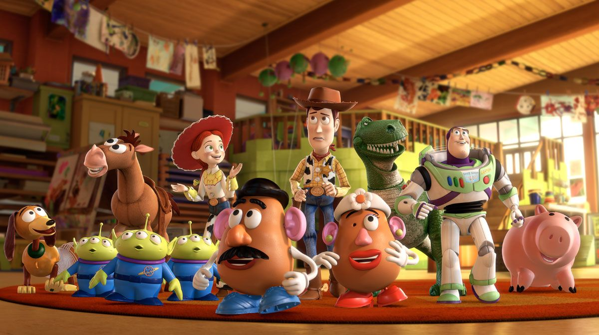

토이 스토리
픽사가 제작하고 월트 디즈니 컴퍼니가 배급을 담당한[1] 3D 애니메이션 시리즈.
애니메이션, 영화계의 역사를 바꾼 작품 중 하나로 이 애니메이션의 성공을 시작으로 전통적인 2D 제작방식이 점차 사양세를 타고, 3D CG 애니메이션이 애니메이션 영화 업계의 대세가 된다. 단순히 3D로의 전환이 아니라, 가족애와 우정, 사랑 등을 깊숙히 담아내고 있는 작품이라는 점에서 그 의의가 더 깊고 큰 애니메이션 이기도 하다. 디즈니 르네상스 시기의 작품들과 더불어 매너리즘에 빠져있던 디즈니 애니메이션을 부활시키는 데 큰 공헌을 했다. 그리고 이후 픽사는 1999년 《토이 스토리 2》를 만들고 월트 디즈니 애니메이션 스튜디오는 《타잔》을 만드는데, 실상 돈은 《타잔》에 더 많이 부었는데도 흥행은 《토이 스토리 2》가 더 성공해서 이후 애니메이션 장르를 픽사가 선도하게 되고, 《인어공주》부터 《타잔》까지 지속된 디즈니 르네상스 시기가 막을 내리게 되는 계기가 되었다. 앤디라는 남자아이의 장난감인 카우보이 인형 우디, 우주전사 인형 버즈 라이트이어, 그 외의 여러 장난감들이 벌이는 이야기를 다루었다. 토이 스토리의 많은 장난감들은 오리지널 디자인이 아닌 현실에서 실제로 판매되던 제품들을 모델로 했다. 미스터 포테이토, 슬링키,바비 인형, 아미맨 등은 원래 판매되던 유명 제품들이지만 주연급 캐릭터들은 오리지널 디자인들이다. 3편에서는 레고, 토토로도 깜짝 등장한다. 드물게 1편보다 2편이 더 좋고 2편보다 3편이 더 좋은, 속편이 원작을 능가하는, 소포모어 징크스가 빗겨나간 대표적인 영화 시리즈이다. 등장하는 캐릭터들 또한 밸런스가 잘 맞고 하나하나의 역할이 뚜렷한 편. 심지어 전편에 나왔던 모든 캐릭터가 개성을 가지고 비중 또한 적절하게 분배되어있으며 심지어 새로나오는 캐릭터마저 훌륭하게 묘사된다. 특히 3편의 켄. 4편의 경우는 3편을 능가했는지 의견이 갈리지만 최소한 버금간다는 평가가 많다. 장난감이 나오는 애니메이션이라서 겉만 보고 유치하다고 생각하는 사람들이 많지만 픽사 작품들 중에서도 손에 꼽히는 명작으로 평가되며, 각 편마다 뚜렷한 철학과 주제가 담겨있다. 장난감들의 대화나 말투 등도 수준이 높은 편. 이 때문에 오히려 어느 정도 나이를 먹어야 완전히 내용과 교훈을 이해할 수 있다. 물론 어린이들 입장에서도 충분히 재미있게 볼 수 있는 작품이다.